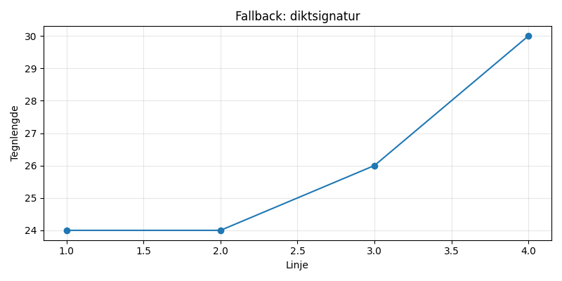

En ensom sokk på loftet, svøpt i støv og drømmer, hvisker om regnbuens lukt, mens månen smiler i et hjørne.

import matplotlib.pyplot as plt
import numpy as np
# Data fra diktet (forenklet)
sokker = [1]
støv = [0.5]
regnbuer = [0.2]
måne_smil = [0.8]
# Generer x-verdier
x = np.linspace(0, 1, 100)
# Plotting av dataene
plt.figure(figsize=(8, 6))
# Ensom sokk på loftet
plt.plot(x, sokker, 'ro', label='Ensom sokk', markersize=12)
plt.scatter(x, støv, color='gray', label='Støv', alpha=0.5)
plt.scatter(x, regnbuer, color='rainbow', label='Regnbuens lukt', alpha=0.5)
# Månen smiler i et hjørne
plt.plot(x, måne_smil, 'bo', label='Månen smiler', markersize=12)
# Tittel og etiketter
plt.title('En Ensom Sokk på Loftet')
plt.xlabel('Tid/Rom')
plt.ylabel('Intensitet/Styrke')
# Legg til en grid
plt.grid(True)
# Legg til legender
plt.legend()
# Lagre figuren
plt.savefig(output_path)execution_ok=False fallback_used=True image_ok=True